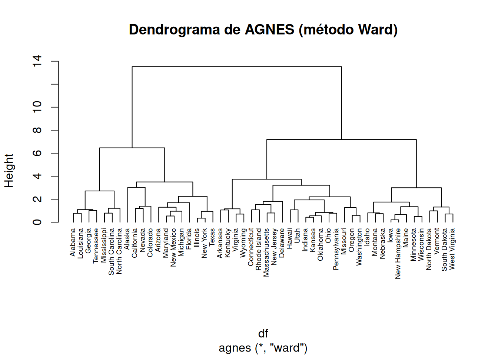
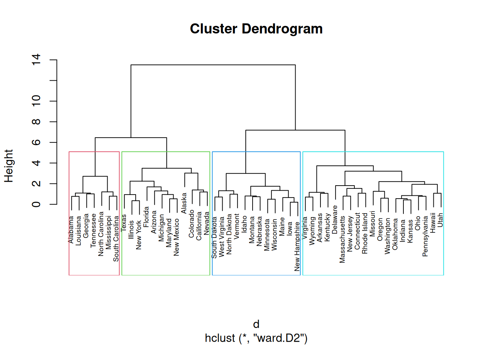
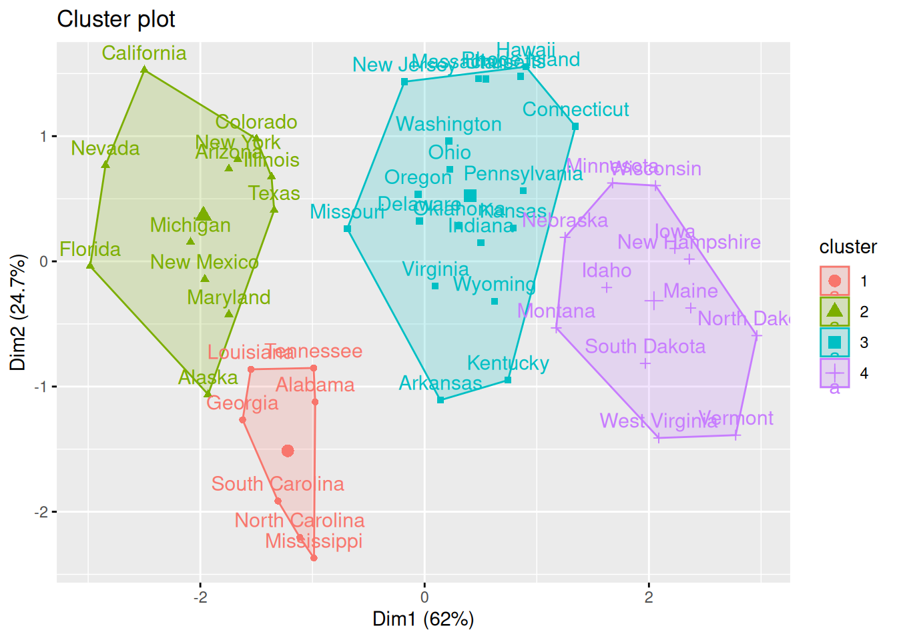
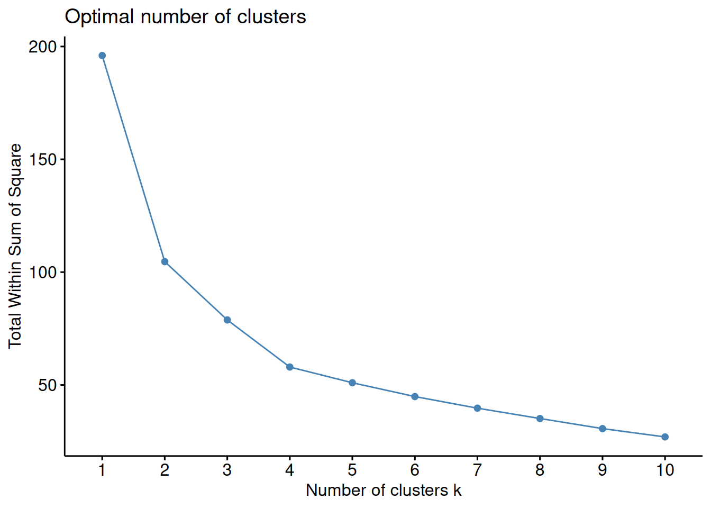
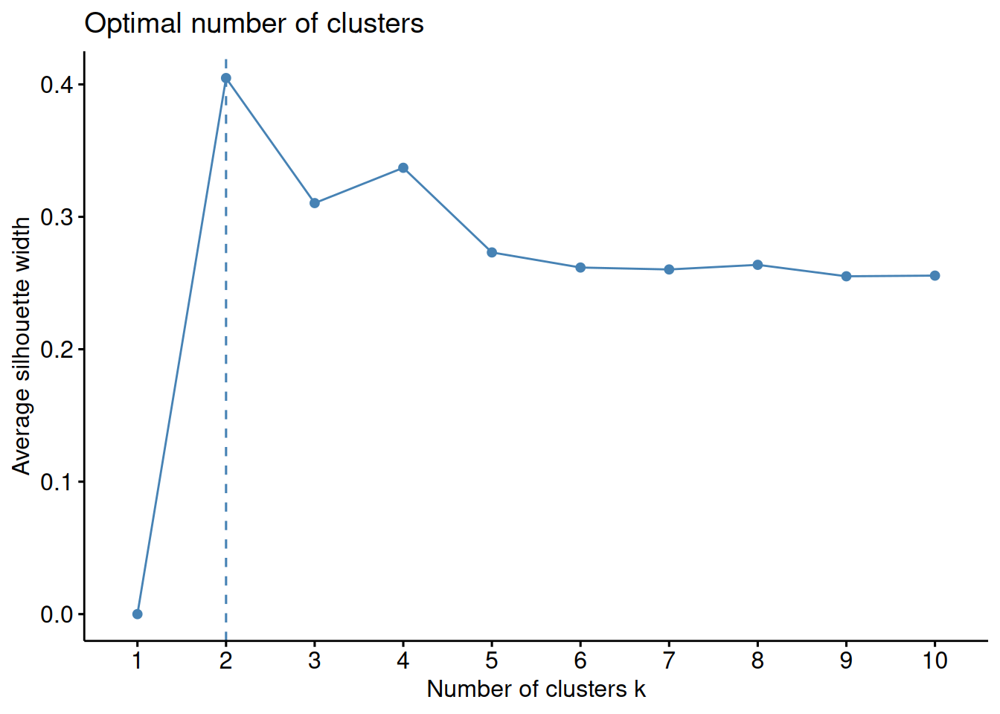

Veamos un ejemplo con el dataset USArrests. La función cluster::agnes implementa este algoritmo en R. También usaremos las funciones de utilidad del paquete factoextra para representación gráfica y comparación de alternativas de agrupamiento utilizando métricas de evaluación del resultado.
La función que implementa el algoritmo AGNES en R es agnes (ninguna sorpresa). Uno de sus resultados es el campo ac, que mide el coeficiente aglomerativo del resultado. Éste cuantifica la cantidad de estructura de agrupaciones que se ha encontrado (mejores valores cercanos a 1).
Sin embargo, si cambiamos al método de enlazado de Ward obtenemos resultados diferentes.
hc2 <-agnes(df, method ="ward" )# Drendrogramapltree(hc2, cex =0.6, hang =-1, main ="Dendrograma de AGNES (método Ward)")

Figura 4.2
En función de a qué altura cortemos el árbol, obtenemos diferentes agrupamientos.
# Método de Wardhc5 <-hclust(d, method ="ward.D2" )# Cortamos en 4 clusterssub_grp <-cutree(hc5, k =4)# Visualizamos el corte en el dendrogramaplot(hc5, cex =0.6)rect.hclust(hc5, k =4, border =2:5)

Figura 4.3
Podemos ver el número de observaciones en cada grupo.
table(sub_grp)
sub_grp
1 2 3 4
7 12 19 12
También se puede representar gráficamente el resultado, ya que la función fviz_cluster acepta este tipo de objetos.
fviz_cluster(list(data=df,cluster=sub_grp))

Figura 4.4
Además, podemos usar fviz_nbclust para utilizar un método de evaluación de los agrupamientos obtenidos con diferentes valores de grupos, y así decidir la mejor opción de configuración (en este caso, a qué altura cortamos el árbol). En el siguiente ejemplo se usa la WCSS.
fviz_nbclust(df, FUN = hcut, method ="wss")

Figura 4.5
O también el método de la silueta. Métodos diferentes de evaluación pueden arrojar conclusiones distintas.
fviz_nbclust(df, FUN = hcut, method ="silhouette")

Figura 4.6
4.2 DBSCAN
4.2.1 Ejemplo básico con R
library(dbscan)
Adjuntando el paquete: 'dbscan'
The following object is masked from 'package:stats':
as.dendrogram
library(ggplot2)# Datos de ejemplodata("moons", package ="dbscan")# Ejecución del algoritmo# eps: radio de búsqueda# minPts: puntos mínimos para considerar núcleo# Jugar con el valor de eps para comparar resultados# El valor óptimo es eps = 0.4, para que no haya puntos de ruidores <-dbscan(moons, eps =0.4, minPts =5) # Visualizaciónggplot(moons, aes(X, Y, color =factor(res$cluster))) +geom_point() +labs(title ="Resultado DBSCAN", color ="Cluster (0 = Ruido)") +theme_minimal()